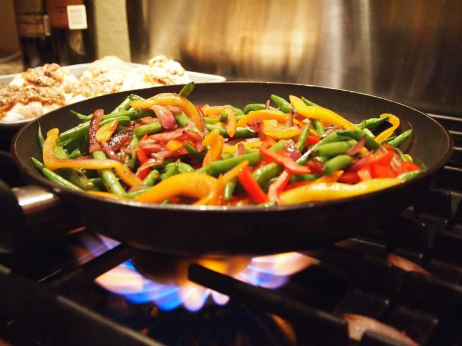
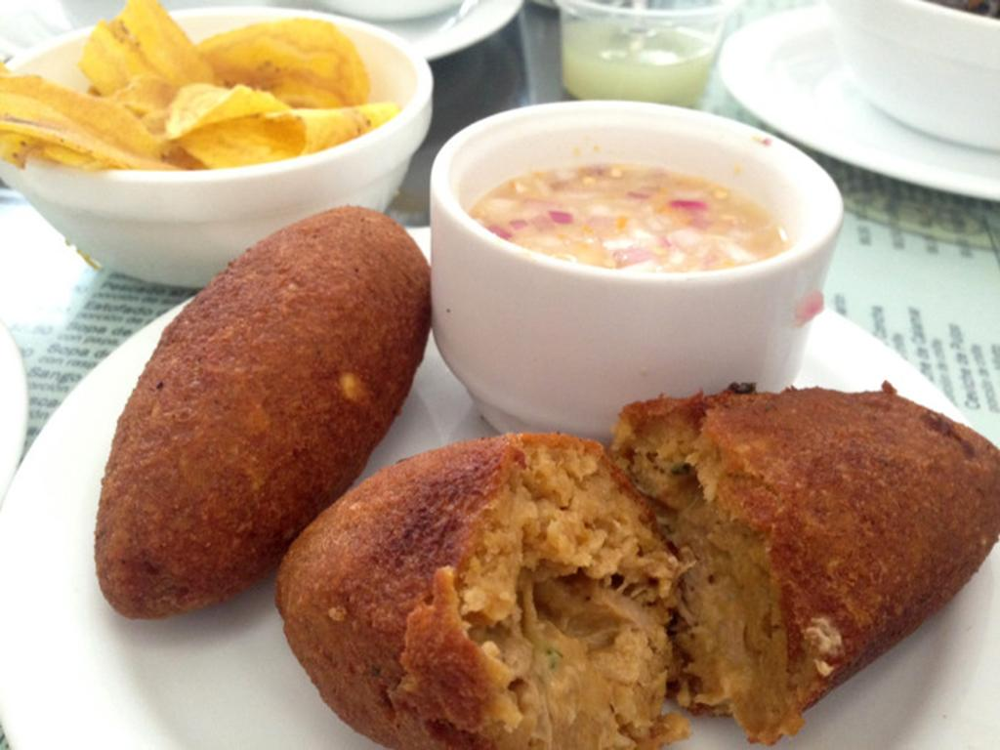

Viche de pescado
Preparacion:
-
Hacer un refrito con ajo, cebolla, pimiento y tomate finamente picado.

-
Agregar el pescado en trozos y sazonarlo con el cilantro, comino, sal y
pimienta.

-
Rallar la mitad del verde crudo y la otra mitad cocinar, luego majar
todo y mezclar.

- Agregar a esta mezcla el maní molido, achiote y amasar.

-
Dar la forma característica (alargada) y rellenar con el pescado y
refrito.

-
Freír en abundante aceite a 170 grados C° o preparar el horno a 180
grados C°.
